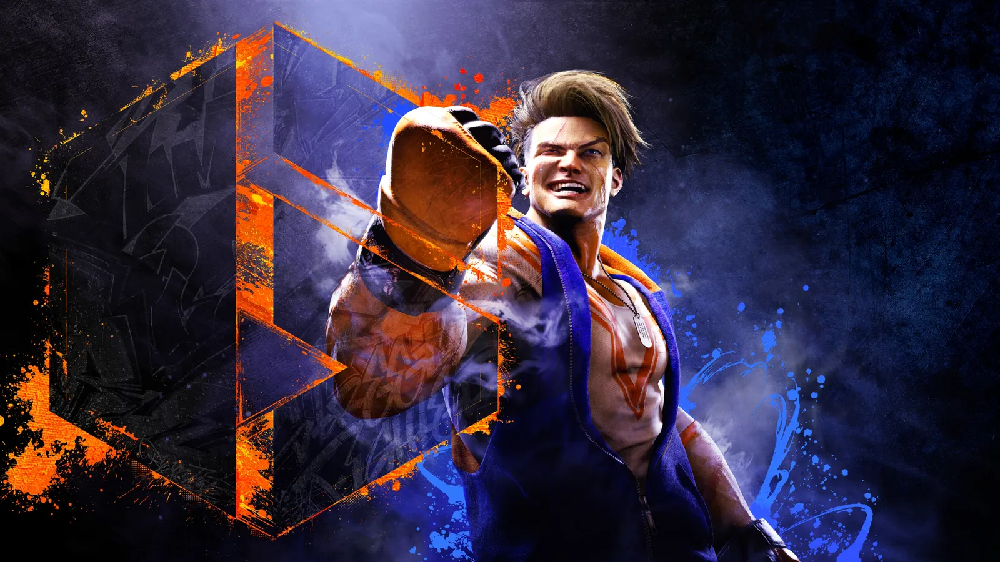

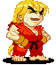
¡Hola!
He escrito esta guía para ayudar a los nuevos jugadores, a los que han elegido un personaje y no saben por dónde empezar, o a los que están estancados en su progreso y no saben en qué trabajar. Toda esta información ya está disponible en YouTube o en excelentes sitios web como supercombo.gg, pero puede resultar abrumadora para un jugador nuevo, o puede resultar difícil saber por dónde empezar o en qué centrarse. Esta guía pretende ser un resumen práctico y conciso de todas las herramientas y que puedes usar para mejorar tu juego. Se divide en 3 capítulos:
Si ya estás familiarizado con el juego, sus mecánicas y cómo funcionan los datos de fotogramas, puedes omitir el primer capítulo.
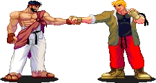
Si este es tu primer juego de lucha, o si no sabes casi nada de Street Fighter, hay algunas cosas que podrían ser aburridas que hacer antes de seguir leyendo, a saber:
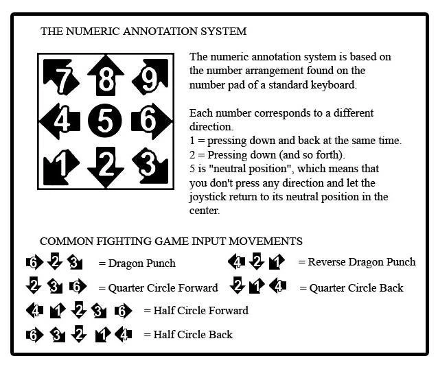
Los Fotogramas son nuestra unidad de tiempo. Un fotograma equivale a 1/60 de segundo. Cada movimiento ofensivo del juego tiene fotogramas de inicio, activos y de recuperación (Startup, Active, Recovery).
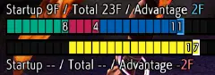 |
El Startup se refiere a la velocidad con la que se ejecuta el movimiento. El Active se refiere al tiempo durante el cual el movimiento puede impactar. El Recovery se refiere a la rapidez con la que puedes actuar después del movimiento. Estar en estado de hitstun o blockstun significa que no puedes actuar. |
Un Cancel es cuando puedes introducir un Especial o un Super durante otro movimiento, saltando sus tiempos de recuperación. No todos los movimientos son cancelables, y no necesariamente pueden cancelarse tanto en especiales como en todos los súper.
Esto es diferente de un enlace, que requiere que introduzcas el siguiente movimiento justo cuando terminas de recuperarte del anterior. Estos suelen requerir un poco más de práctica para lograrlo.
Encadenar es una mecánica exclusiva de ciertos ataques ligeros normales, que permite encadenarlos al impactar o bloquear, saltándose sus tiempos de recuperación. Algo así como 2 LP > 2 LP > 5 LP, con solo 2 LP necesitando pasar sus tiempos de recuperación. No todos los ataques ligeros normales son encadenables.
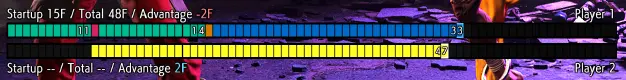 |
Esto es un Cancel. Los fotogramas activos de tu primer movimiento se acortan y no tiene fotogramas de recuperación. |
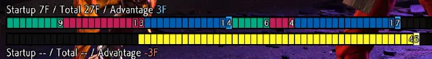 |
Este es un Link. Introduces tu segundo movimiento justo cuando te recuperas del anterior. |
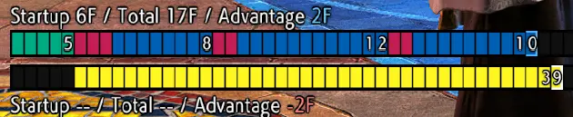 |
Se trata de tres botones de luz conectados en cadena, y solo el primero necesita cuadros de inicio. |
Recibir un golpe durante los cuadros iniciales de un movimiento resulta en un contraataque (malo).
Recibir un golpe durante los cuadros activos o de recuperación de un movimiento resulta en un
contraataque de castigo (muy malo).
Algunos movimientos son Invencibles a ataques aéreos, proyectiles o golpes, o totalmente invencibles durante parte o la totalidad de sus cuadros iniciales y activos.
Obtienes una ventaja de cuadros diferente según si tu ataque impacta o es bloqueado.
Un ataque con -2 al bloqueo significa que tu oponente puede actuar 2 cuadros antes que tú si lo
bloquea con éxito.
Un ataque con +4 al impactar significa que puedes actuar cuatro cuadros antes que tu oponente si
el ataque impacta.
Es decir, a menos que Canceles tu ataque para otro movimiento, saltándote así los cuadros de
recuperación.
Por ejemplo, echemos un vistazo a los 2HP de Ryu:
Te lo aseguro: no necesitas saber todos estos números. Lo que debes sacar en claro es que los 2 puntos de vida de Ryu son cancelables, salen rápido y son buenos contra ataques aéreos; pero la larga recuperación y la penalización por bloqueo significan que no querrás que este ataque falle o sea bloqueado.
Puedes obtener una ventaja de cuadro adicional en ciertos escenarios:
Todos estos son acumulativos. Así que, en teoría, realizar un Contragolpe (+2) a un oponente agotado (+4) mientras se usa Impulso (+4) te daría un total de 2+4+4=10 cuadros adicionales con los que trabajar, independientemente de si el ataque impacta o es bloqueado.
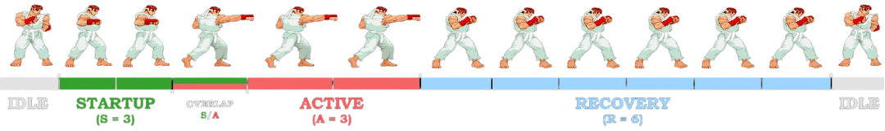
Comienza el partido con seis existencias de Drive.
Puede utilizar su medidor de conducción para:
Puedes obtener Drive mediante:
Pierdes Drive por:
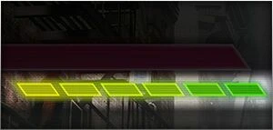
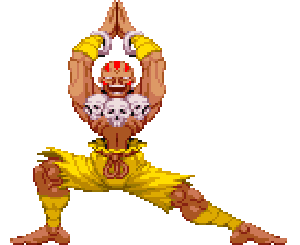
La forma de jugar a Street Fighter se puede dividir en tres partes: Ataque, Defender y Neutralidad.
El ataque es tu recompensa por ganar en Neutral.
Estás por encima de tu oponente y puedes actuar antes que él, marcando el ritmo de la partida.
En otras palabras, es tu turno.
La defensa es el precio que pagas por perder.
Tu oponente puede actuar antes que tú, y quieres salir de esta situación lo antes posible.
En otras palabras, es su turno.
Neutral es todo lo intermedio. Tanto tú como tu oponente pueden actuar; nadie tiene la ventaja. e podría escribir un libro entero sobre Neutral, ya que es esencialmente lo que son las Artes Marciales. Pero lo simplificaremos.
Durante el modo Neutral, debes cambiar entre tres estilos de juego diferentes:
Esto crea una situación de piedra, papel o tijera, que se ve así: Activo > Reactivo > Preventivo > Activo
Si ambos eligen la misma opción, el que tenga un movimiento más rápido o con mejor alcance gana.
La diferencia entre jugar de forma reactiva o preventiva puede ser confusa y, siendo sinceros, no importará mucho en los niveles más bajos, ya que la mayoría de las veces te encontrarás con maniáticos que no entienden el significado de "defensa" o jugadores con mentalidad de tortuga. El cebo entra en juego un poco más arriba en la clasificación.
Todo esto también es teórico. Un jugador activo y ofensivo puede dominar a uno defensivo si este no conoce el ritmo y el espacio adecuados para sus golpes y antiaéreos, o si simplemente es demasiado lento para reaccionar.
Estas cosas pasan sin que te des cuenta. Pero tener una razón para jugar como lo haces, en lugar de actuar al azar, y ser capaz de reconocer a tu oponente Intentarlo te ayudará a adaptarte y responder adecuadamente, lo cual se vuelve clave a medida que asciendes.
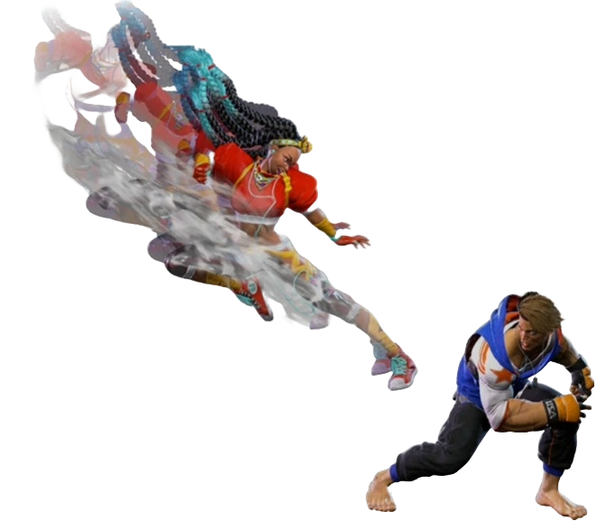
Para qué estás aquí.
No intentes aprenderlo todo de golpe, es ineficaz y
muy poco divertido.
Simplemente elige un tema en el que quieras trabajar, practícalo un poco en modo de
entrenamiento y luego conéctate.
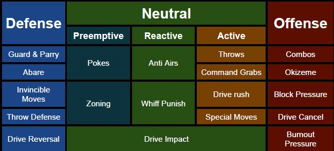
Si eres principiante, creo que debo abordar esto: no te centres solo en el ataque. Este es un error muy común de principiante: pasar horas practicando la combinación perfecta, solo para conectarte y darte cuenta de que, en realidad, no estás luchando contra un muñeco de entrenamiento y que nunca podrás acertarla.
No tiene sentido conocer un combo de daño de 6500 si no puedes acertar el primer golpe.
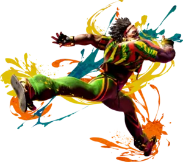
Perdiste Neutral, tu oponente te está atacando con todas sus fuerzas, intentemos sacarlo de encima.
La base de tu defensa, puedes defenderte alto conteniendo la espalda o agacharte manteniendo abajo
y atrás.
La guardia de pie te defiende de todo, excepto de ataques bajos.
La guardia agachada te defiende de todo, excepto de ataques aéreos y por encima de la cabeza.
La gran mayoría de los movimientos del juego impactan alto y se pueden defender con cualquier tipo
de guardia.
Los ataques por encima de la cabeza suelen tener un inicio considerable, por lo que estarás
agachado la mayor parte del tiempo y podrás reaccionar si ves venir un ataque por encima de la
cabeza.
Ningún guardia puede defenderse de los derribos.
Se realiza manteniendo pulsado MP+MK por un coste inicial de media barra de impulso. Cumple la misma función que la defensa, con algunas diferencias, tanto positivas como negativas:
Cada personaje tiene al menos un botón de inicio de 4f, que es el más rápido. Si tu oponente deja una abertura en su ataque mientras bloqueas y puedes alcanzarlo, puedes recuperar tu turno presionándolo.
Sin embargo, si te equivocas, terminarás recibiendo un contraataque y recibiendo un combo que de otra manera podrías haber bloqueado.
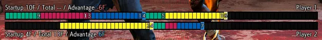 |
Aquí, el segundo movimiento del Jugador 1 fue interrumpido durante sus cuadros de inicio por el jab del Jugador 2. |
Así que, aunque deberías tener esta opción en mente, no debería ser tu opción predeterminada.
Si tu oponente tiene un ataque sólido, es mejor bloquear su camino de vuelta a Neutral o usar
un movimiento invencible. Hablando de eso…
Una herramienta increíblemente poderosa, pero un gran riesgo.
Un Invencible Reversal, a menudo abreviada incorrectamente como "inversión", es un movimiento
invulnerable durante sus cuadros iniciales; lo que significa que tu oponente puede lanzarte lo
que quiera, este movimiento lo superará y recuperarás tu turno.
Por ejemplo, el OD Shoryuken de Ryu (
623PP) es invulnerable durante los cuadros 1 a 8.
Todos los personajes tienen al menos un movimiento invencible.
Muchos Super Arts pueden actuar
como inversiones Invencibles, y para algunos personajes, es lo único que tienen, lo que significa
que deben gastar Super Medidor para acceder a él.
Sin embargo, la mayoría del elenco también tiene un movimiento especial dedicado a Sobremarcha,
así que solo tienen que gastar dos barras de indicador de impulso.
Esto también significa que
pierden acceso a él si entran en estado de agotamiento (aunque aún conservan sus Super Arts ).
Aprende cuáles son los movimientos invencibles de tu personaje y úsalos cuando tu oponente te
esté dando una paliza, ya sea derribándolo, escapando o dejándolo expuesto a un combo posterior.
Normalmente, lo usarás al levantarte.
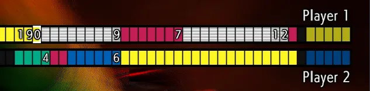 |
Mis cuadros de inicio invencibles (casillas blancas) atravesaron los cuadros activos de mi oponente (rojos), y fueron alcanzados mientras se recuperaban (azules) una vez que mi propio movimiento se activó. |
Como dije, es una apuesta arriesgada.
Los movimientos invencibles suelen tener un largo periodo de
recuperación.
La sobredosis de Ryu la animación completa del Shoryuken dura casi un segundo.
Así que, si falla o es bloqueado, estás expuesto al mayor combo de Contraataque de Castigo que tu
oponente tenga preparado.
Es posible que pierdas la mitad de tu barra de vida por perder esta apuesta.
Una táctica común es provocar reversiones. Tu oponente te derriba, se acerca para aparentar que
continuará el ataque, pero bloquea en el último momento.
Así que, como todo en el juego, no seas predecible y lo uses con demasiada frecuencia, o pagarás
las consecuencias.
Reaccionar a un derribo puede ser bastante difícil, así que intenta observar a tu oponente para
saber cuándo esperarlo. Los escenarios más comunes incluyen: después de bloquear un salto,
al final de una serie de bloqueos o justo al levantarte.
Si crees que se aproxima un derribo, tienes tres opciones (además de los movimientos invencibles
que vimos en la sección anterior):
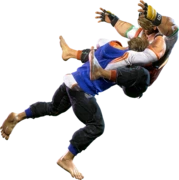
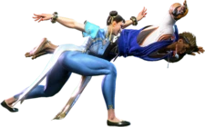
Algunos personajes tienen acceso a Agarres de Comando, movimientos especiales con propiedades
similares a las de los lanzamientos. (360P de Zangief, 63214P de Manon, etc.)
No puedes usar Agarres de Comando.
Por otro lado, tienen una recuperación de fallo más larga, generalmente más de 50 cuadros, en
comparación con los 30 de un lanzamiento común.
Esto hace que el retroceso y, sobre todo, el salto
sean opciones mucho más atractivas contra ellos, ya que, a diferencia de un lanzamiento normal,
tu oponente no podrá reaccionar con un antiaéreo.
Así que, si te has enfrentado a un Zangief que te ha agarrado con un comando cuatro veces en la
misma ronda: menos bloqueo, más esquiva.
Mientras bloqueas, puedes presionar 6HPHK para realizar un Drive Reversal, a costa de dos
unidades de impulso.
Si conecta, el oponente sale volando y causa una pequeña cantidad de daño recuperable.
Sin embargo, se puede bloquear, en cuyo caso se queda en -6f. Esto significa que normalmente se
usa contra ataques fuertes, para que el oponente no se recupere lo suficientemente rápido como
para bloquearlo.
Drive Reversal es más seguro que Drive Impact, pero es más costoso y mucho menos
gratificante.
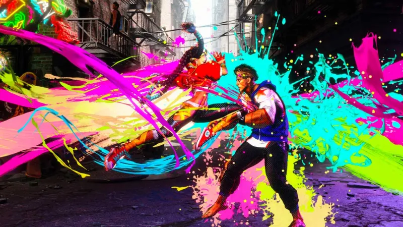
Ya he despotricado bastante sobre qué es Neutral en el segundo capítulo. Vamos a enumerar todas las herramientas que puedes usar en Neutral y en qué estilo de juego se incluyen. Pero primero, tenemos que aclarar algo. Les presento...
Úselo con precaución.
Se ejecuta introduciendo HP + HK, a costa de una unidad de Drive.
Tanto ofensivo como defensivo, Drive Impact es un movimiento blindado, capaz de absorber dos golpes
sin ser interrumpido. Un tercer golpe lo interrumpiría, y absorberías el daño de cada golpe
absorbido.
Suponiendo que el movimiento no se interrumpa, existen varios resultados posibles.
Asegúrate de practicar combos de derrumbe, salpicadura, malabarismo y aturdimiento para maximizar
tu recompensa tras un Impacto Impulsor exitoso.
Ten cuidado de no ser predecible con esto, ya que Impacto Impulsor se puede contrarrestar de varias
maneras:
Los mejores usos defensivos de Impacto Impulsor son contra jugadores que prefieren usar movimientos
muy lentos e incansables, ya que no podrán recuperarse lo suficientemente rápido para
contrarrestarlo.
También puedes arriesgarte a lanzarlo durante tu ataque, especialmente contra un oponente
acorralado, ya que incluso si lo bloquea, recibe un golpe de pared.
Sin embargo, es un riesgo, y verás que los jugadores reaccionan sorprendentemente bien a
los Drive Impacts.
Sin embargo, si están en estado de Agotamiento, no pueden contraatacar con Impacto Impulsor,
lo que limita sus respuestas.
¡No te acerques más!
Los Pokes son movimientos rápidos y de buen alcance. Además, son seguros al bloquear si se usan a
la distancia óptima.
Averigua cuáles son los empujones de tu personaje: si golpean bajo, si son descoordinados, si son
cancelables y cuál es su alcance efectivo.
Si golpean bajo, bien, pueden sorprender a los oponentes que retroceden (ya que bloquear bajo
requiere que estés agachado, no puedes hacerlo mientras caminas).
Un movimiento descoordinado es algo así: no puedes dañar el bastón de JP, pero sí puede hacerte
daño a ti.
Incluso si tu toque es cancelable, confirmar el golpe en un combo puede ser difícil. Para
remediarlo, puedes practicar el "buffering" lanzas tu toque justo fuera del alcance e introduces
el movimiento especial posterior. Si tu oponente se encuentra con tu toque, se ejecuta el
movimiento especial; de lo contrario, falla, y listo.
Si tu toque no es cancelable, normalmente no obtienes ninguna recompensa extra por acertarlo.
Dicho esto, si consigues un contraataque o, mejor aún, un contraataque de castigo, la ventaja de
frames adicional puede abrir el camino a ciertos enlaces.
Por ejemplo, los 5MK de Rashid no son cancelables, pero
tendrán +10 en Contraataque de castigo, lo que permite un enlace con sus 5 PS.
La idea es lanzar tus toques cuando tu oponente se acerca a ti y crees que va a atacar. Si lo haces
suficientes veces, se frustrarán, lo que generalmente los lleva a recurrir a tácticas más
peligrosas, como:
Sin embargo, no puedes jugar con la estrategia de mantenerte alejado para siempre. Aunque castigar
un toque por reacción puede ser difícil, si tu oponente se da cuenta de que lo atacas
constantemente, puede fingir que se acerca, haciéndote fallar a propósito, y estará listo para
castigarte.
Drive Impact, en particular, es una respuesta peligrosa si tu toque no se puede cancelar.
"HADOKEN!!!"
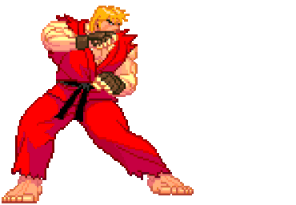
El Zoning (zoneo) suele referirse a proyectiles, o a… bueno, a Dhalsim, JP o Guille. No todos los personajes tienen herramientas de zonificación, pero quienes las tienen quieren aprovecharlas al máximo.
La zonificación tiene el mismo propósito que los empujones, solo que desde más lejos.
Acosas a tu oponente desde la distancia, lo que lo empuja a cometer un error, lo que generalmente
significa que intentará saltar sobre tus proyectiles. Luego puedes antiaéreo.
Sin embargo, practica la distancia ideal desde la que quieres lanzar tus proyectiles, ya que si lo
haces desde muy cerca, el salto de tu oponente te golpeará antes de que puedas recuperarte.
Usar diferentes botones generalmente afectará la velocidad de viaje de tu proyectil, su
trayectoria o, en el caso de JP, si impacta bajo, alto o por encima de la cabeza.
Asegúrate de
variar las opciones para dificultar que tu oponente supere tu barrera de zonificación.
Los proyectiles OD suelen impactar una vez más. Esto es útil en las "guerras de zonificación".
Mientras que dos bolas de fuego que chocan se cancelan, una bola de fuego OD puede absorber dos
impactos, por lo que superará a una básica y la atravesará.
¿Tiene sentido? Si no, mira esto.
Algunos personajes tienen acceso a proyectiles de impacto múltiple sin necesidad de gastar
recursos, como la Cruz Sónica de Guile.
Ten en cuenta las herramientas antizonificación de tu oponente: movimientos que pasan por debajo o
directamente a través de tus proyectiles, patadas en picado o simplemente sus propios proyectiles.
Me temo que la mejor manera de aprender sobre esto es por las malas. Si recibes el Colmillo
Venenoso de A.K.I. suficientes veces, sabrás que no debes bombardearla con bolas de fuego desde
pantalla completa.
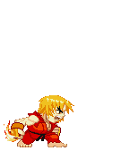
“SHORYUKEN!!!”
Los ataques con salto son peligrosos.
Si te golpean, sufrirás un gran daño.
Incluso bloqueando, solo se necesitan 3 cuadros para recuperarse de un salto. Esto significa que,
en la mayoría de los casos, el que aterrice podrá actuar primero.
Por suerte, cuando tu oponente está en el aire, no puede bloquear, y con un poco de práctica,
puedes castigar consistentemente las aproximaciones aéreas en la reacción, usando movimientos
inmunes a los ataques aéreos: estos se llaman antiaéreos.
Cada personaje tiene formas de lidiar con los ataques aéreos, ya sea con botones, movimientos
especiales o incluso proyecciones aéreas. Aprende cuáles son tus opciones y familiarízate con su
alcance, ritmo y posibles seguimientos.
A los jugadores de rango inferior les encanta saltar, y algunos jugadores legítimos no conocen
otra forma de hacerlo. Aprende a usar antiaéreos pronto y dejarás fuera de combate a muchos.
Aviso Legal: este es probablemente el concepto más difícil de comprender en toda esta guía, ya
que requiere que hagas algo bastante contraintuitivo: dejar que tu oponente dé el primer paso.
O, más precisamente, provocarlo.
Pero aun así es algo que al menos querrás saber. Especialmente si juegas con un personaje que no
tiene muchas maneras ingeniosas de entrar y tiene que depender de sus buenos footsies.
Castigar por whiff significa castigar a tu oponente por fallar su ataque.
Esto es algo que puedes hacer como reacción si el movimiento que usó tiene muchos cuadros de
recuperación.
Sin embargo, hay un par de cuestiones clave:
"¡Te tengo!"
Cada personaje tiene acceso a un lanzamiento hacia adelante y uno hacia atrás que te permite
cambiar de lado con tu oponente.
Cada lanzamiento tiene un inicio de 5f y no se puede bloquear. También tienen una larga
recuperación de 30f si fallas, así que intenta no ser demasiado predecible.
Buenos momentos para intentar acertar un lanzamiento incluyen:
Un tipo especial de lanzamiento al que algunos personajes tienen acceso. Muy similar a los lanzamientos, salvo por algunas diferencias importantes:
Los personajes cuyo plan de juego se centra en sus agarres de comando se llaman grapplers.
Bloquear agachado todo el día contra ellos es una mala idea.
Si eres un grappler, primero querrás asustar a tu oponente para que bloquee, preferiblemente
agachándote para bloquear ataques bajos, y luego colar un agarre de comando.
Por otro lado, son fácilmente castigables si fallan (más de 50 cuadros frente a los 30 de un
lanzamiento).
Un jugador puede esquivar tu agarre de comando saltando y atacándote al caer más
rápido de lo que te puedes recuperar.
Se realiza manteniendo pulsado MP+MK y pulsando dos veces hacia adelante, lo que cuesta una acción
de Impulso.
O bien, puedes pulsar dos veces hacia adelante y pulsar MP+MK justo al pulsar hacia adelante por
segunda vez, de modo que ni siquiera comience la animación de parada, lo que hace que tu Impulso
sea más sorprendente.
Impulso es como una supercarrera. Te impulsa hacia adelante y otorga cuatro cuadros adicionales de
ventaja al movimiento usado fuera del Impulso, manteniendo el impulso hacia adelante.
Esto significa que un botón que normalmente sería -1 al bloquear y alejar a tu oponente, ahora
es +3 y te deja cerca de él, dándote tu turno y permitiéndote continuar tu ataque, e incluso
intentar un lanzamiento rápido.
¿Ese golpe por encima de la cabeza que era span style="color: greenyellow;">+3 al impactar?
Ahora es +7, lo que te permite enlazar movimientos más potentes.
Por ejemplo, si Ed consigue sus 6 PV tras un Impulso Impulsivo, tendrá +5
en lugar de +1, lo que le permitirá enlazar un movimiento con un inicio de 5 frames o menos, como sus 5 LK, que, a diferencia de los 6 PV, se puede cancelar con una habilidad especial.
Al bloquear, tendrá +1 y tendrá su turno, en lugar de -3 y quedar expuesto.
Determina la distancia desde la que quieres usar Impulso Impulsivo, los movimientos que quieres
usar tras él y su seguimiento tras un bloqueo o golpe.
El oponente puede intentar reaccionar a un enfoque de Impulso Impulsivo con un botón rápido o uno
que tenga muchos frames activos.
Pero es una de las maneras de iniciar tu ataque, especialmente si
juegas con un personaje rápido como Juri, cuyo Impulso Impulsivo es difícil de reaccionar.
Aunque es una parte muy importante de tu conjunto de movimientos, es específico de cada personaje,
así que no entraré en demasiados detalles.
Consulta tu lista de comandos para encontrar movimientos especiales que te ayuden a iniciar tu
ataque.
Estos movimientos incluyen:
Sin embargo, ninguna de estas herramientas es completamente infalible. Algunas tienen un inicio
lento, otras son muy inseguras al bloquear, y algunas pueden ser antiaéreas.
Para saber más, consulta las guías específicas de tu personaje, su página de supercombos y pasa un
tiempo en la sala de entrenamiento.
A algunos les gusta hablar de "saltar neutral", algo con lo que personalmente no estoy de acuerdo.
Lo único que haces es usar los trucos de tu personaje para iniciar tu ataque, en lugar de jugar
los tradicionales "Footsies".
Esto es parte de lo que hace diferente a cada personaje y de lo
divertido que es jugar.
¡Tu turno!
Conseguir un combo no es el juego, es la recompensa.
Como ya he dicho, y no puedo enfatizarlo lo
suficiente, aprender combos alocados no te servirá de nada si no logras acertar el primer golpe.
Pero
si lo consigues, ¡aprovechémoslo al máximo!
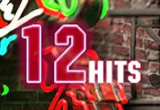 |
Así es como sabes que has conectado un combo. Si esto no aparece, significa que hubo una brecha
de al menos un cuadro en tu ataque. Este cuadro es suficiente para que se registre el invencible reverso de tu oponente, así que es importante. |
Al practicar combos, configura el muñeco en "Bloqueo tras el primer golpe". Si bloquea,
significa que perdiste el combo.
Diferentes combos pueden generar diferentes recompensas, que son:
Cuanto más daño haga tu combo, menos interacciones necesitarás para ganar.
Por otro lado, cuanto mejor sea tu acarreo en la esquina y la ventaja de derribo, más
probabilidades tendrás de ganar la siguiente interacción.
Normalmente, conviene priorizar la ventaja de derribo y el acarreo en la esquina para mantener
la presión y reservar las rutas más dañinas para rematar a tu oponente o no desperdiciar recursos.
Consulta la página de supercombos de tu personaje para ver una lista de combos, aunque no podrás
aprenderlos todos de inmediato.
¡Patéalos mientras están caídos!
Sección larga entrante.
Japonés para "Ofensiva de Despertar". Una parte muy importante de tu ofensiva, y una que los
principiantes tienden a ignorar por completo.
Cuando tu oponente es derribado, no puede ser golpeado. Pero sigue siendo tu turno, y mucho.
La idea es colocarte encima de tu oponente y amenazarlo con un golpe o una proyección justo cuando
se levanta.
Calcularlo manualmente puede ser difícil. Si lo haces demasiado pronto, tu ataque fallará. Si lo
haces demasiado tarde, será bloqueado o, peor aún, tu oponente te golpeará primero.
Afortunadamente, todos los personajes tienen acceso a configuraciones con tiempo automático, que
quizás te interese aprender.
Por ejemplo, tras derribar a su oponente con 214 LK, Rashid puede usar Impulso de Impulso
inmediatamente con 6 PS, y siempre golpeará al oponente justo cuando se esté levantando.
También puedes simular que vas a atacar y bloquear o esquivar en el último momento para provocar
su despertar.
El único momento en el que podrías considerar no hacer nada es cuando tu oponente aterriza lejos
o no lo suficiente, o si estás agotado y con muy poca salud, lo que hace que el daño residual
sea una seria amenaza para tu vida.
Cada vez que derribas a tu oponente, deberías saber qué vas a hacer a continuación.
De esa manera, obligas a tu oponente a adivinar. Si se equivoca, recibes más daño y repites el
proceso. Si acierta, dependiendo de la situación, recupera su turno o vuelves a neutral.
Sin embargo, esta no es una situación 50/50 y, en general, las probabilidades están a tu favor.
Veamos cada una de nuestras opciones de okizeme y cómo interactúan con la reacción del oponente al despertar:
Gana contra: cualquier opción ofensiva de despertar, excepto reversiones invencibles, guardia (si tiene plus al bloquear).
Derrota contra: reversiones invencibles, parada perfecta.
Un meaty es cuando golpeas a tu oponente justo cuando se levanta. Para golpear un meaty,
normalmente querrás usar botones que te dejen con plus al bloquear, de modo que aún tengas tu
turno incluso si tu oponente se defiende, y te permita responder a un Drive Impact de despertar
(que nunca debería ser recompensado).
Esto hace que Drive Rush sea una gran opción para los enemigos más fuertes, ya que los cuatro
cuadros adicionales de ventaja permiten obtener muchos movimientos positivos al bloquear, además
de una mejor recompensa al golpear.
Si se sincroniza manualmente, cuantos más cuadros activos tenga tu movimiento, más fácil será.
Los golpes bajos y por encima de la cabeza también son preferibles, obligando al oponente a decidir
entre agacharse o estar en guardia. A menos que paren, lo que le permite bloquear cualquier tipo de golpe,
pero lo hace vulnerable a los derribos.
Si el golpe es fuerte, puedes conectar un combo. Si lo bloquean, puedes mantener la presión.
Si usa un movimiento invencible o una parada perfecta, pierdes.
Gana contra: cualquier opción ofensiva de despertar, excepto reversiones invencibles, guardia y
parada.
Pierde contra: reversiones invencibles y retroceso.
De vuelta a neutral: Lanzamiento técnico, salto.
Simplemente lanza a tu oponente en cuanto se levante. Si bloquea o intenta presionar un botón,
ganas.
Si usa un lanzamiento técnico, vuelves a neutral.
Si usa un movimiento invencible o retroceso, pierdes.
Si salta, tu lanzamiento falla, pero deberías recuperarte lo suficientemente rápido como para
contrarrestarlo en el aire. Ten en cuenta a los personajes que tienen acceso a saltos contra la
pared o habilidades especiales aéreas.
Ten en cuenta que muchos personajes tienen acceso a un bucle de lanzamiento en la esquina. Esto significa que puedes lanzar a tu oponente a la esquina, acercarte a él y repetir el proceso.
Gana contra: reversiones, parada.
Pierde contra: agarres de comando.
De vuela al neutral: bloqueo.
Tanto los ataques carnosos como los lanzamientos pierden contra reversiones invencibles, lo que
los convierte en una herramienta defensiva muy poderosa. Pero también son muy arriesgados de lanzar.
Si crees que tu oponente va a lanzar una reversión, puedes provocarla. Acércate como siempre,
simulando que vas a intentar un ataque carnoso o un lanzamiento, y luego bloquea en el último
momento.
Las reversiones tienen largos periodos de recuperación, así que si logras provocarla y bloquearla,
tendrás tiempo de sobra para golpear a tu oponente con tu combo de castigo más agresivo.
Para que sea creíble, tendrás que estar justo encima de tu oponente, lo que te hace vulnerable a
los lanzamientos, así que prepárate para usar técnicas si es necesario.
Si tiene acceso a un agarre de comando y tiene el coraje de usarlo al despertar, no hay nada que
puedas hacer más que esperar que se equivoque.
Dicho esto, los luchadores no suelen tener acceso a movimientos invencibles fuera de los
Super Arts.
Con algunas excepciones, como el Cabezazo OD blindado de Honda, o viceversa, cuando Jamie,
borracho, consigue un Agarre de Comando con su Tenshin.
Si bloquean, deberías poder reaccionar con un derribo.
Gana contra: Lanzamientos, Inversiones Invencibles, golpes fuertes.
Pierde contra: Golpes bajos.
De vuelta a neutral: guardia y parada.
Muy similar al cebo, la única diferencia está en el espaciado: en lugar de cebos con reversiones,
estás cebos con lanzamientos. Caminas hacia tu oponente caído mientras se levanta y luego regresas
en el último segundo, justo fuera del alcance del lanzamiento.
Sin embargo, a diferencia del cebo, en realidad estás caminando hacia atrás, por lo que no estás
bloqueando bajo.
En lugar de caminar hacia atrás, también puedes saltar directamente hacia arriba para obtener un
resultado similar. Mayor riesgo, mayor recompensa: puedes conectar un salto mientras caes, pero
deberían poder recuperarse lo suficientemente rápido como para golpearte con un antiaéreo.
Contra los luchadores, ten en cuenta que algunos agarres de comando pueden llegar bastante lejos.
Victorias contra: Absolutamente todo menos parada perfecta.
Derrotas contra: parada perfecta.
Los saltos seguros son difíciles de preparar. Requieren una ventaja de derribo muy específica, ni
muy larga ni muy corta, y que tu personaje esté dentro del alcance para un ataque con salto.
Algunos personajes ni siquiera tienen acceso a estas configuraciones. Sin embargo, para quienes sí
las tienen, esto es imprescindible. Los saltos seguros son geniales y la única opción ofensiva
para vencer reversiones invencibles.
Así es como se ve.
La idea es realizar un ataque con salto justo antes de aterrizar, mientras se mantiene abajo-atrás
para bloquear.
/Modo nerd activado
Si quieres saber cómo funciona: al aterrizar, los fotogramas activos de tu ataque de salto se acortan, y recuperarse de un salto solo toma tres fotogramas, lo cual es menos que el inicio de cualquier movimiento en el juego. Así, puedes bloquear más rápido de lo que tarda en revertirse.
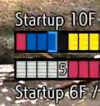 |
Aquí está la clave. El último cuadro activo de mi ataque de salto (cuadrado rojo) debería
impactarlos durante el primer cuadro de inicio de su inversión (cuadrado blanco).
Pero como el movimiento de Ryu es invencible, mi ataque no impacta. Aun así, impacto y
me recupero a tiempo (cuadrados azules) antes de que el ataque de Ryu termine de
prepararse y pueda bloquear. El tiempo es bastante preciso, esto es literalmente una décima de segundo; pero con un poco de práctica, puedes incorporarlo a tu memoria muscular. |
/Modo nerd Desactivado
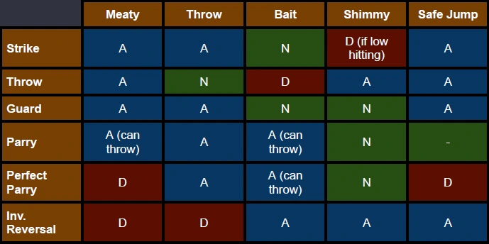 |
A = El jugador atacante gana. D = El jugador derribado gana. N = No hay ganador, vuelve a Neutral. Notarás que el jugador derribado siempre está en desventaja. Por último, algo que no mencioné: algunos personajes pueden usar el tiempo que les queda tras un derribo para preparar algunas de sus herramientas: el portal de JP, el Fuhajin de Juri, el veneno de A.K.I.… Y si el derribo fue muy largo, incluso pueden intentar una combinación de golpe y proyección después. Esto generalmente requiere que sacrifiquen algo de daño o carga en las esquinas, pero la presión resultante es aún más aterradora. |
Para terminar esta sección, aquí tienes un pequeño ejercicio divertido:
Ve a la sala de
entrenamiento, configura a Dummy Ryu en "Backrise", "Bloquear tras el primer golpe", para
lanzar un Puño Ligero al despertar, y su barra de HP en "Refill" (esta debería estar activada por
defecto).
Ahora intenta reducir tu salud a cero.
Un par de ejemplos: Rashid, Cammy, JP, Chun Li, Kimberly, Dhalsim.
Si lo consigues, ¡felicidades! ¡Ahora sabes cómo presionar a tu oponente!
Algo que podrías notar rápidamente al conectarte: la gente bloquea tus ataques.
Frustrante, lo sé...
Si eres nuevo, este es el primer error que debes evitar: no inicies tu combo automáticamente si
el oponente bloquea tu primer golpe. Las rutas de combo están llenas de oportunidades al ser
bloqueadas y suelen terminar con un movimiento muy inseguro.
Intentaré presentar las diferentes opciones para cuando tu oponente esté bloqueando, pero si
prefieres probar tú mismo, ve al modo entrenamiento, configura a Ryu para que bloquee todo,
haz que lance un puñetazo ligero o un Shoryuken OD al bloquear, y prueba a ver qué puedes hacer.
El Shoryuken castigará cualquier hueco en tu ataque, mientras que el Puño Ligero permite pequeños
huecos.
Primero, una definición de qué es una cadena de bloqueo.
Sin embargo, en SF6, la gran mayoría de los movimientos son negativos al bloquear, lo que
significa que hay muy pocas cadenas de bloqueo "verdaderas": el oponente actúa primero después
de bloquear tu ataque, por lo que puede intentar zafarse de tu presión con un golpe
(énfasis en "intentar") o una inversión invencible.
Sin embargo, que actúe primero no significa necesariamente que recupere su turno. Veamos
nuestras opciones.
Si tienes positivo al bloquear, sigues siendo tu turno y actúas primero. Esto ocurre después
de la mayoría de los ataques con salto o cruzados, o después de ciertos botones o movimientos
especiales específicos de tu personaje (como siempre, consulta la página de resumen de supercombo.gg ).
Otra situación común es después de un Drive Rush o cuando tu oponente está en Burnout, como en ambos casos,
obtienes 4 cuadros adicionales de ventaja (por lo que un -3 en los movimientos de bloqueo se convierte
en +1).
Actuar primero significa que puedes hacer, bueno, lo que quieras. Que suele ser una de dos cosas:
Cualquier personaje puede presionar MP+MK, o pulsar dos veces hacia adelante, para gastar 3
unidades de impulso y realizar una Impulsión tras cualquier botón cancelable, ya sea que
impacte o se bloquee. Esto se llama Cancelación de Impulso.
Al ser una cancelación, anula cualquier recuperación del botón cancelable, junto con algunos
fotogramas activos. Sin embargo, la Impulsión en sí tiene 9 fotogramas de inicio.
En otras palabras, esto significa que puedes reducir los fotogramas de recuperación de cualquier
botón cancelable a aproximadamente 9. Esto, al usar un botón medio o pesado, es un buen
intercambio, ya que permite enlaces increíbles, como la conexión de botones pesados.
Además, el botón usado fuera de Cancelación de Impulso tiene las mismas propiedades que si se
usara fuera de Impulso, lo que significa que tiene 4 fotogramas adicionales de ventaja y te
impulsa hacia adelante.
Al golpear, el Drive Cancel te permite extender tus combos de maneras que de otra
manera no podrías.
Al bloquear, genera una situación de bloqueo positiva, imponiendo una combinación de golpe y
lanzamiento a tu oponente.
En ambos casos, tomas tu turno automáticamente y puedes presionar a tu oponente.
El Drive Cancel se usa a menudo para gastar recursos y rematar a tu oponente, o para
ayudarte a confirmar tu golpe después de un toque, dándote más tiempo para reaccionar dependiendo
de si tu toque impactó o fue bloqueado.
Es una herramienta extremadamente poderosa, pero cuida tu Indicador de Impulso, no querrás entrar
en Agotamiento en medio de una ronda. Hablando de eso…
Si tu oponente se queda sin indicador de impulso, entrará en estado de Burnout. Esto significa varias cosas:
Todo esto combinado permite una presión de bloqueo increíble. Los 4 cuadros adicionales abren el camino a verdaderas cadenas de bloqueo, sin dejar ninguna abertura, e incluso bucles de presión. Si no tienen medidor de Súper y tu ataque es inmune a los golpes, no tendrán forma de escapar y estarán prácticamente en jaque mate.
Asegúrate de revisar las nuevas opciones de tu personaje para cuando tu oponente esté agotado, para intentar sacar el máximo provecho de esta situación.
Antes de siquiera preocuparte por tu oponente, asegúrate de que tu ejecución sea impecable.
No descuidar tus combos, conocer tu okizeme y presión, y usar tus golpes y antiaéreos con eficacia
ya es suficiente para llevarte bastante lejos.
Solo entonces deberías empezar a considerar más las
acciones de tu oponente, lo que nos lleva a…
Independientemente del enfoque que elijas, esta es la verdad innegable que debes respetar. Cuanto más repitas la misma táctica, más la esperará tu oponente y más probable será que se adapte. Métete en su cabeza, condúcelo a esperar cierto patrón, ¡y luego cambia las cosas!
Cualquier personaje puede y debe usar cualquier estrategia, pero mientras que algunos son muy
versátiles (como aprendices de todo y maestros de nada, el mejor ejemplo es Ryu), otros tienden
a preferir un estilo de juego específico.
Por ejemplo, Kim tiene muchas maneras ingeniosas de iniciar su ataque, pero sus movimientos de
pies están por debajo de la media y no tiene reversión de OD.
Asimismo, ten en cuenta las fortalezas del personaje de tu oponente y explota sus debilidades.
Recuerda, esto es un juego, y estás aquí para divertirte. Subir de rango es
innegablemente satisfactorio; demuestra que estás mejorando.
Pero, al mismo tiempo, concentrarse demasiado en ello te desanimará y le quitará toda la
diversión. Además, jugar desanimando es una forma segura de entrar en una mala racha.
Míralo así: el modo clasificatorio solo te enfrenta a jugadores de tu mismo nivel. Miles de
jugadores son mejores que tú, y miles son peores.
Cuanto más aprendes → más alto subes → más sabe tu oponente → más interesante se vuelve el juego.
Y eso es todo. ¡Gracias por leer!
Me llevó más tiempo del que quisiera admitir, pero espero que esto ayude a algunas personas.
Esto debería ser más que suficiente para empezar.
Un agradecimiento especial a supercombo.gg, Infil, el subreddit de SF6, la comunidad de FGC,
mi gato, etc.
Si quieres saber más sobre tu personaje o sobre un tema específico, hay muchísima gente genial
en la comunidad dispuesta a ayudar. Creadores de contenido, sitios web, foros, subreddits,
servidores de Discord... lo que quieras.
¡Jugar es divertido, compartir la experiencia es aún mejor!
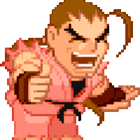